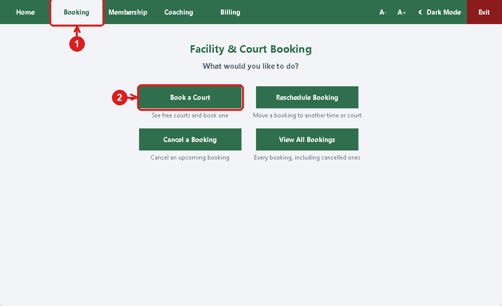
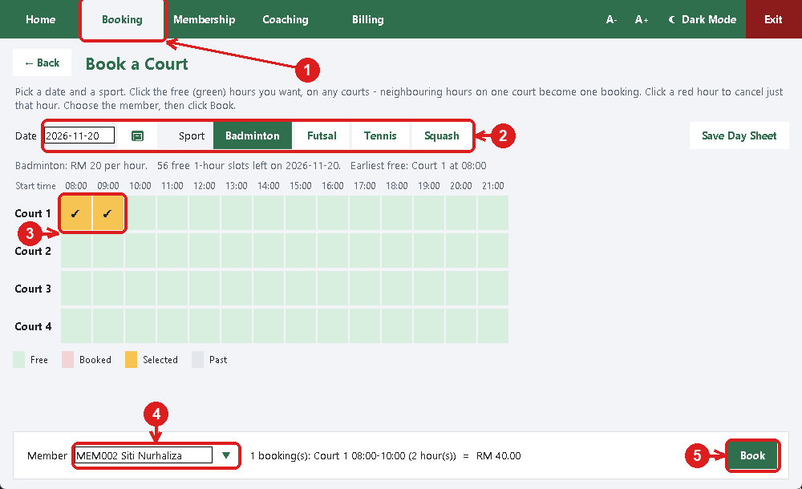
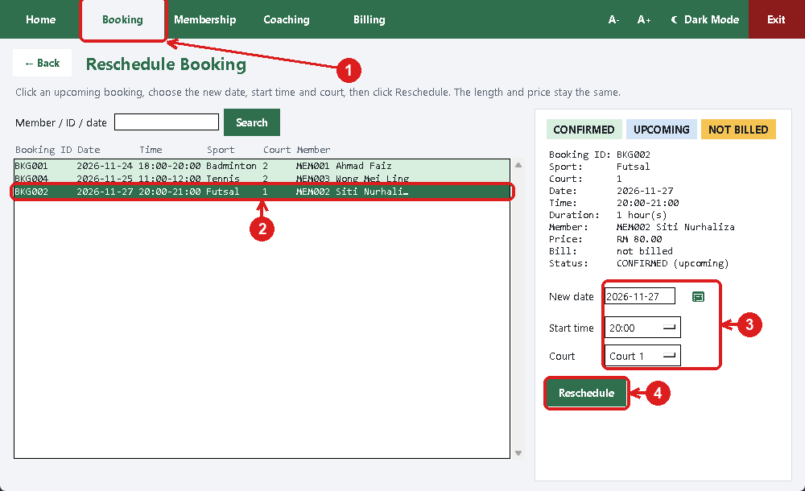
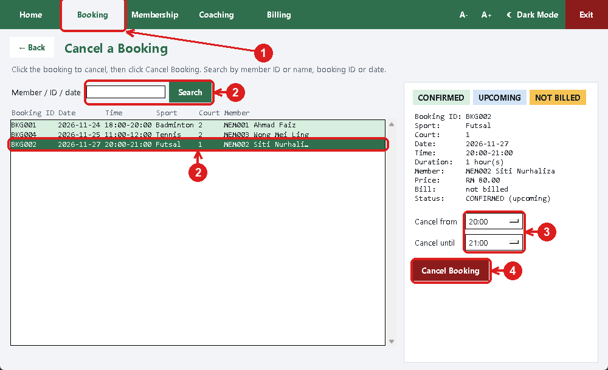
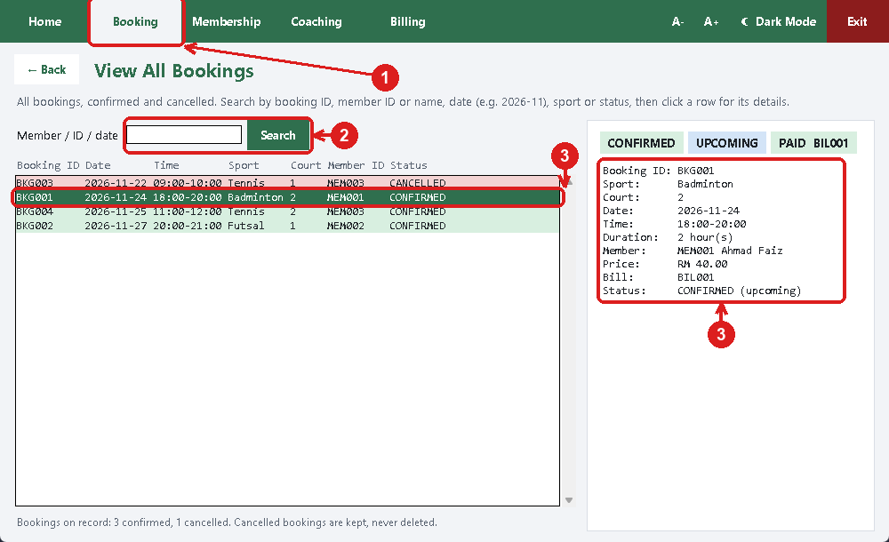

Your job: 12 pictures (6 for Section A.4 system GUI, 6 for Section C.3 user manual).
- Open the Google Doc and press Ctrl+F for the figure number (for example Figure 54).
- Delete the yellow [Paste screenshot here] line, then paste the picture: Insert > Image > Upload from computer, about 15 cm wide.
- Check the caption under it matches the one below (use Copy caption). Tick Done.
The user manual pictures have numbered red marks. Paste the numbered steps next to them so the numbers agree.
| Done | Figure | Picture (click to enlarge) | Caption to type under it | Steps next to this picture | Where in the report | File | Note |
|---|
| Figure 54 |  | Figure 54: The program after starting | No marks on this picture: nothing to click. | C.2 Starting the Program | Fig_54_The_program_after_starting.png
plain | |
| Figure 55 |  | Figure 55: Action menu of the Booking tab | 1. Click the Booking tab. 2. Click Book a Court. The numbers on the picture match these steps. | C.3.1 Booking | Fig_55_Action_menu_of_the_Booking_tab.png
numbered marks | |
| Figure 56 |  | Figure 56: Book a Court | 1. Click the Booking tab, then Book a Court. 2. Type the date (or click the calendar button) and click the sport. 3. Click the green hours you want. They turn amber with a tick. Neighbouring hours on one court become one booking. 4. Choose the member in the Member box (type a name or click the arrow). 5. Click Book. The numbers on the picture match these steps. | C.3.1 Booking | Fig_56_Book_a_Court.png
numbered marks | |
| Figure 57 |  | Figure 57: Reschedule a Booking | 1. Click the Booking tab, then Reschedule Booking. 2. Click the booking in the list. 3. Choose the new date, start time and court. 4. Click Reschedule and answer Yes. The numbers on the picture match these steps. | C.3.1 Booking | Fig_57_Reschedule_a_Booking.png
numbered marks | |
| Figure 58 |  | Figure 58: Cancel a Booking | 1. Click the Booking tab, then Cancel a Booking. 2. Click the booking in the list (search by member, booking ID or date if needed). 3. Pick Cancel from and Cancel until. By default the whole booking is selected. 4. Click Cancel Booking and answer Yes. The numbers on the picture match these steps. | C.3.1 Booking | Fig_58_Cancel_a_Booking.png
numbered marks | |
| Figure 59 |  | Figure 59: View All Bookings | 1. Click the Booking tab, then View All Bookings. 2. To find a booking, type in the search box (booking ID, member ID or name, date, sport or status) and click Search. 3. Click a row to see its details on the right. The numbers on the picture match these steps. | C.3.1 Booking | Fig_59_View_All_Bookings.png
numbered marks | |